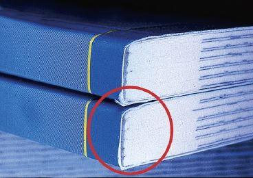
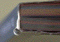
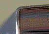

EINRISSE DER KASCHIERFOLIE AN DEN SCHNEIDKANTEN
|
Beim Beschnitt im Dreimesser-Automaten kommt es zu
Einrissen in der Kaschierfolie im Kopf- und
Fußbereich eines Broschurenrückens. Die
Einrisse in der Folie sind jeweils am Übergang
des Broschurenrückens zur beim Beschnitt unten
liegenden Umschlagseite angeordnet und stellen eine
optische Beeinträchtigung des Verkaufsgutes
dar (Abb. 1).
|

|
Abb. 1: Folieneinriss im Broschurenrücken.
|
|
|
|
Mögliche Ursachen:
|
|

|
|
Abb. 2: Folienriss mit Spaltung des
darunterliegenden Kartons.
|
|
|
|

|
|
Abb. 3: Folienriss mit Spaltung des
darunterliegenden Kartons.
|
|
|
|

|
|
|
|
|
|

|
|
|
|
|
|

|
|
|
|
|
|

|
|
|
|
|
|

|
|
|
|
|
|

|
|
|
|
|
|
|
Die Einrisse in den Kaschierfolien stehen in einem engen
Zusammenhang mit Quetschfalten im Broschurenrücken, die
durch zu hohen Anpressdruck während des Beschnitts
hervorgerufen werden (siehe auch Kapitel: Faltenbildung im
Rücken). Die Einrisse in der Kaschierfolie gehen
häufig mit der Spaltung des darunterliegenden Kartons
einher (Abb. 2 und Abb. 3).
Das Einreißen der Kaschierfolie nimmt dabei im
Schneidstapel von oben nach unten ab, d. h. der
Folieneinriss ist beim obersten Exemplar in aller Regel
gravierender als bei den weiter unten liegenden
Exemplaren.
|
Mögliche Abhilfen:
|
|
In manchen Dreimesserautomaten kommen auch
Rückenanpress-Stationen zum Einsatz, um dem
Einreißen des Broschurenrückens - und damit auch
der Kaschierfolie - entgegenzuwirken. Wenn keine
Rückenanpress-Station vorhanden ist, sollte
während des Dreiseiten-Beschnitts der durch die
Anpressplatte aufgebrachte Druck optimal eingestellt sein.
Der Pressdruck muss hoch genug sein, um einen guten
Beschnitt zu gewährleisten, gleichzeitig aber auch
niedrig genug, um Quetschfalten im Broschurenrücken
vollständig zu vermeiden.
Einen Einfluss auf das Auftreten von Folieneinrissen hat
neben dem Pressdruck die Höhe des Schneidstapels.
Reduziert man die Anzahl der pro Beschnittvorgang zu
schneidenden Broschuren, so verringert sich das Ausmaß
der Folieneinrisse bzw. lässt es sich mitunter
gänzlich vermeiden. Dies liegt daran, dass eine
geringere Anzahl von Broschuren bei Belastung mit dem
Pressdruck von der Pressplatte exakter gehalten werden kann
und eine bessere Auflage des Schneidgutes gewährleistet
ist.
Die Schärfe der Schneidmesser ist den entsprechenden
Anforderungen des Schneidgutes genügend oft zu wechseln
und sollte natürlich während des gesamten
Arbeitsvorganges in etwa dem Zustand eines frisch
geschliffenen Schneidmessers entsprechen.
|
Beispiel(e):
|
|
Bei vergleichenden Schneidversuchen in der FOGRA sollte der
Einfluss des Messers auf Beschädigungen an der
Schnittkante des Broschurenrückens festgestellt werden.
Zunächst erfolgten dabei Schneidversuche an einem
Planschneider mit einem „stumpfen" Messer. Der
Broschurenrücken wurde jeweils an der linken Anlage
angelegt, so dass die Anordnung dem Fußbeschnitt der
Broschuren im Dreiseiten-Beschnitt entsprach. Eine spezielle
Anpressplatte wurde an der Abdeckplatte des Planschneiders
befestigt, um die Schneidgeometrie in Dreimesser-Automaten
zu kopieren. Die Anpressplatte wies zum
Broschurenrücken hin eine Abflachung zum Ausgleich der
Steigung auf und war gegenüber der Schnittkante um 2 mm
zurückversetzt. Es wurden jeweils Stapel mit 6, 4 und 2
Broschuren geschnitten und das Auftreten von Folieneinrissen
visuell beurteilt. Bei diesen Versuchen traten
Folienablösungen in der oberen Hälfte des
Schneidstapels auf, wobei die Einrisse sowohl durch die
Kaschierfolie als auch den Umschlagkarton hindurch
verliefen.
Anschließend wurden die Versuche mit einem frisch
geschliffenen Messer wiederholt. Folieneinrisse traten nur
beim Schneiden von Stapeln mit 6 oder mehr Broschuren
jeweils bei den obersten beiden Exemplaren auf. Beim
Schneiden von weniger als 6 Broschuren waren keine
Beschädigungen der Kaschierfolie erkennbar.
|
Allgemeine Hinweise:
|
|
Für den Reklamationsfall:
Beschädigte Muster sicherstellen.
Ergänzende Literatur:
KUEN, Th.; HUNDSDORFER, O.:
Anforderungen an die Glanzfolienkaschierung für
Umschläge und Buchdecken.
Wiesbaden/München: Bundesverband Druck und Medien e.V.
/ FOGRA, 1998 (72.002) - Forschungsbericht
|
|
|
|
|
|
|
Kontakt:
kuen@fogra.org
|
Ein-kue-200111
|